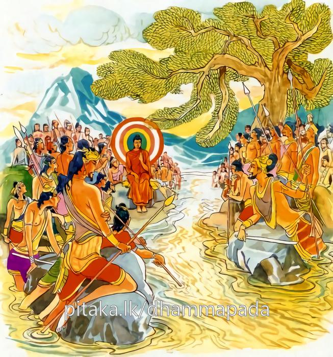
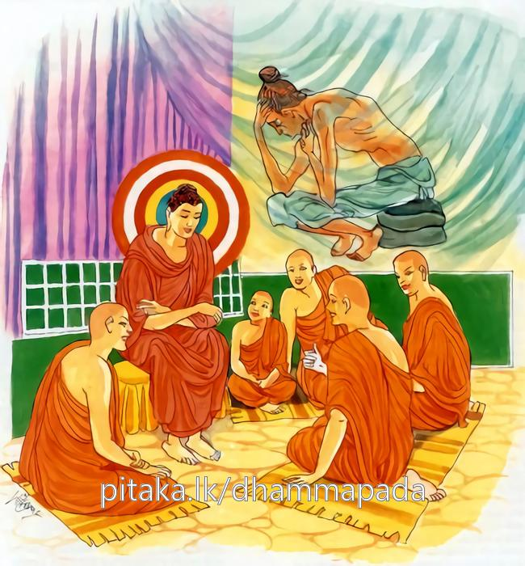
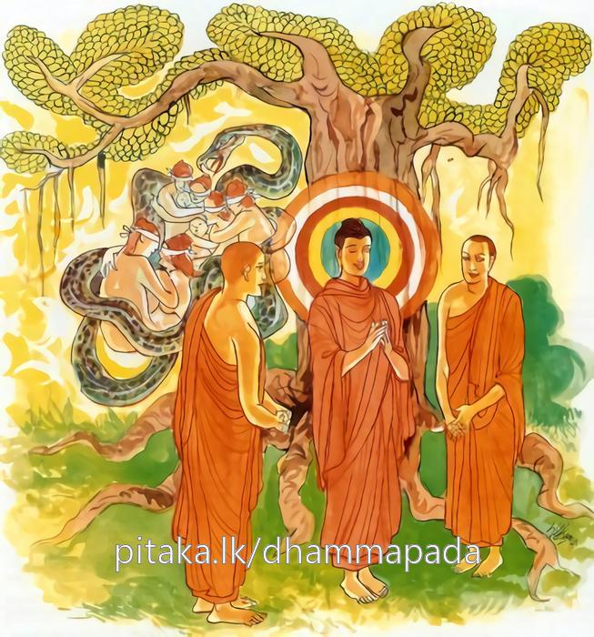

15-1 ශාක්ය - කොලියයන්ගේ දියදබරය
මෙම කතාව ධම්මපද අටුවාවෙන් ද කියවන්න.
සුසුඛං වත ජීවාම වෙරිනෙසු අවෙරිනො
වෙරිනෙසු මනුස්සෙසු විහරාම අවෙරිනො.
(ප්රාණවධාදි පංචවිධ වෛරයෙන්) වෛරී වූ මනුෂ්යයන් අතුරෙහි (දුශ්චරිතවෛර නැතියෙන්) අවෛරි වූ අපි, මනුෂ්යයන් දුශ්චරිත වෛරයෙන් වෛරී වැ පවත්නා කල්හි අවෛරි ව වසමෝ ද, එසේ වූ අපි ඒකාන්තයෙන් ඉතා සුව සේ ජීවත් වමු.

සුසුඛං වත ජීවාම ආතුරෙසු අනාතුරා
ආතුරෙසු මනුස්සෙසු, විහරාම අනාතුරා.
ආශ්චර්ය්යයෙකි! අපි ක්ලේශාතුරයන් අතුරෙහි අනාතුර වන්නමෝ ඉතා සුවසේ ජීවත් වමු . (මෙසේ) මිනිසුන් ක්ලේශාතුර වන කල්හි අපි එයින් ආතුර නොවී වසමු.

සුසුඛං වත ජීවාම උස්සුකෙසු අනුස්සුකා
උස්සුකෙසු මනුස්සෙසු විහරාම අනුස්සුකා.
ආශ්චර්ය්යයෙකි! අපි පස්කම් සෙවීමෙහි උත්සුක මිනිසුන් අතුරෙහි එහි අනුත්සුක වන්නමෝ ඉතා සුවසේ ජීවත් වමු. (මෙසේ) මිනිසුන් පස්කම් සෙවීමෙහි උත්සුක වන කල්හි අපි එහි අනුත්සුක ව වසමු.

ශාක්ය කෝලිය දෙරට වැස්සෝ කිඹුල්වත් නුවරටත් කෝලිය නුවරටත් අතරින් ගලා බස්නා රොහිණි ගඟ එක් ම ඇවුරුමෙකින් ඇවුරුම් කොට බඳවා ගොයම් කරන්නෝ ය. පොසොන්මස් ඉද්දෙහි ගොයම් මැලවී යනු දුටු දෙනුවර වැස්සන්ගේ කම්කරුවෝ එහි රැස් වුහ. කොලිය නුවර සිට පැමිණි කෝලිය කම්කරුවෝ “මේ දිය ඇල්ල දෙපසෙහි ම කුඹුරුයායනට නතු කොට ගෙණ යනු ලබන්නේ නම් අප දෙපසෙහි ම කුඹුරුයායනට දිය නො පොහොනේ ය, අපගේ ගොයම් එක් දියවරකින් ම පල ගන්නේ ය, එහෙයින් මේ දිය අපට දෙවූ” යි ඉල්ලා සිටියහ. එකල්හි කිඹුල්වතින් පැමිණ සිටි ශාක්ය කම්කරුවෝ “තොප ගොයම් කපා පාගා අටුකොටු පුරවා ගත් කල්හි අපට රන්රුවන් මිලමුදල් කහවණු ගෙණ මලුපැස් ගත් අත් ඇති ව තොපගේ දොරට පැමිණ පෙළ ගැසී සිටින්නට සිදුවනු ඇත, අපගේ ගොයම් ද එක් ම දියවරකින් පැසෙන්නේ ය, එහෙයින් මේ දියවර අපට දෙවු” යි කීහ. “නො දෙන්නෙමු අපි, අපිත් නො දෙන්නෙමු, කරණ එකක් කරවු, අපි, එය බලා ගන්නෙමු” යි මෙසේ උනුන් වහසි බස් කියා කලහ වඩා ගෙණ එකෙක් නැගිට එකක්හට පහර දුන්නේ ය. පහර කෑයේ පහර දුන්නහුට පෙරළා පහර දුන්නේ ය.
මෙසේ උනුන් පැහැර පැහැර රජපවුල් පිළිබඳ ජාති - කුල - පරම්පරාභේද ඇද දක්වා උනුනුන්ට නින්දා පරිභව කරමින් ඔවුහු තව තවත් කලහ වැඩූහ. එහි කෝලිය කම්කරුවෝ “තෙපි බලු කැණහිල් ඈ තිරිසනුන් සේ තම බුහුනන් හා විළිබිය හැර සහවාසයට පැමිණ ලෝසිරිත් කුලසිරිත් ඉක්මවා දිවිවැටුම් කරණ ශාක්යයන් කර පිණවා සිටියහු, මොවුන්ගේ ඇත්- අස්-රිය-පාබලසෙන් හා කඩු පලිහ ගෙණ අපට කුම් කරහු?” යි කීහ. ශාක්ය කම්කරුවෝ “බැහැර යවු, තෙපි කවරහු, ඉන්නට හිටින්නට හොවින්නට තැනක් නැති තිරිසනුන් සේ කොලොම්රුක්බිල්හි දිවි ගැල වූ කුලයක් පරපුරක් ගමක් රටක් දිවෙලක් නැති අනාථ වූ අසරණ වූ කුෂ්ඨරෝගීන්ගේ ඇත්-අස්-රිය-පාබලසෙන් හා එක්ව කරට ගත් කඩු පලිහයෙන් අපට කුම් කරහු? ආවහු නම් කර බැද ගෙණ පෙරළා යහු” යි ගුගුළහ. මෙසේ උනුන්ගෙන් ඇණුම් බැණුම් පහර ලත් දෙපසෙහි කම්කරුවෝ වහා ගොස් එබව ඒ ඒ රාජ්යයන්හි ඒ ඒ කාර්ය්යාංශයන්හි නියුක්ත ඇමතියනට දන්වා සිටියහ. ඇමැතියෝ රජදරුවනට කියා පෑහ. එබස් අසා නැගී සිටි ශාක්යරජදරුවෝ “බුහුනන් හා සහවාසයට ගියවුන්ගේ බලපුළුවන්කම් දක්වන්නෙමු” යි යුද අවි ගෙණ යුදට සැරසී නික්ම ගියහ. කොලියරජදරුවෝ ද “කොලොම්රුක්මුල්හි විසූවන්ගේ හයිබල බලවූ” යි යුද අවිගෙණ යුද පිණිස නික්ම ගියහ.
එ දවස තිලෝගුරු සම්මා සම්බුදුරජානන් වහන්සේ අලුයම ලොව බලා වදාරණ සේක් යුදට සැරසී ගත් දෙපස නෑයන් දැක “මා මෙහි නො ගියහොත් මූ හැම දෙන යුදබිම නැසී යන්නාහ, එහෙයින් මා දැන් එහි යා යුතුය” යි සිතා එකලාව ම අහසින් වැඩ රොහිණී ගඟ මැඳ අහසෙහි පලක් බැඳ වැඩ හුන් සේක. යුද පිණිස ගඟබඩ දෙපස රැස් වූ නෑයෝ බුදුරජුන් දැක යුද අවි බිම දමා දොහොත් මුදුන් දී වැඳ සිටියහ. ඉක්බිති බුදුරජානන් වහන්සේ “මහරජුනි! මේ කලහය කුමක් නිසා?” යි විචාළවිට “නො දනිමු ස්වාමීනි!” යි ඔවුහු කීහ. “කවරෙක් දනී දැ?” යි විචාළවිට “සෙනෙවිරද්හු දනිති” යි කීහ. සෙනෙවිරදුන් විවාළ විට “යුවරජහු දනිති” යි කීහ. මෙලෙසින් දස් කම්කරුවන් තෙක් චිචාරා ඔවුන් දියදබරයෙකැ යි කීවිට “මහරජුනි! මෙය දියදබරයෙකැ යි කියත්, එසේ නම් දබරයට මුල් වූ දියත්ත වටිනා කමින් කොතෙක් වටී ද, දිය මිලට ගන්නේ ද නො වේ, වටිනාකම කිය හැක්කේ දිය මිලට ගණිතොත් පමණි, දිය සිඳී බොන්නට නාන්නට දිය නැති ව ගිය කල්හි වුව ද දියෙහි වටිනා කමෙක් නෑ නො වේ දැ” යි වදාළ විට “එසේ ය ස්වාමීනි! දියෙහි වටිනාකමෙක් නැත, දිය සිඳී ගිය කල්හි ද දියෙහි වටිනා කමෙක් නැතැ” යි ඔවුහු කීහ. “එසේ නම් අගයක් නැති දියත්තක් නිසා යුද වැද සිටුනා තොපගෙන් එකක්හුගේ වටිනාකම කොතරම් වේ දැ?” යි ඇසූ කල්හි “තිලෝගුරු හිමියනේ! අප එකක්හුගේ වටිනා කම නො කිය හැකිය, අගය මෙතෙකැ යි පමණ නො කිය හැකිය” යි කීහ. බුදුරජානන් වහන්සේ “එසේ නම් වැඩි වටිනාකමක් නැති වටිතත් තුට්ටුවක් තරමිනුත් නො වටිනා දියත්තක් නිසා පමණ නො කටහැකි අගය ඇති එක් රජදරු කෙනෙකුන් වුව ද මේ නිසා නැසී ගියහොත් එය තොපට තරම් දැ” යි අසා වදාළ සේක. එහිදී ඔවුහු සැම දෙන නිහඬ වූහ. බුදුරජානන් වහන්සේ ඔවුන් අමතා “මහරජුනි! කුමක් නිසා මෙබඳු නො සුදුසු ගැරහිය යුතු කරුණක් ඉදිරියට ගෙණ අවි ගැටුම් දිවිනැසුම් කරන්නහු ද, මම දැන් මෙහි නො ආයෙම් නම් අද මෙහි මේ ගඟ ලේගඟක් වනු එකාන්ත ය, තෙපි ඉදිරිපත් වූවහු අයුත්තක් අපරාධයක් කරන්නට ය, තෙපි උනුන් කෙරෙහි වෛරී ව වසන්නහු ය, මම වෛර නැත්තෙම් වෙමි, තෙපි කෙලෙස් ලෙඩින් පීඩිත ව වසන්නහු ය, මම කෙලෙස් ලෙඩින් නො ද පීඩිත වෙමි, තෙපි සසර දිග් ගසන පස්කම් බැඳුම් සෙවුමෙහි උත්සාහ ඇති ව වසන්නහු ය, මම එහි උත්සාහ රහිත ව වසමි” යි වදාරා මේ ධර්මදේශනාව කළ සේක.
සුසුඛං වත ජීවාම වෙරිනෙසු අවෙරිනො,
වෙරිනෙසු මනුස්සෙසු විහරාම අවෙරිනො.
.
සුසුඛං වත ජීවාම ආතුරෙසු අනාතුරා,
ආතුරෙසු මනුස්සෙසු, විහරාම අනාතුරා.
.
සුසුඛං වත ජීවාම උස්සුකෙසු අනුස්සුකා
උස්සුකෙසු මනුස්සෙසු විහරාම අනුස්සුකා.
වෛර ඇති මිනිසුන් අතුරෙහි අවෛරි වූ අපි, මිනිසුන් වෛර ඇතිව වසන කල්හි අවෛරී ව වසමු ද, (ඒ අපි) එකාන්තයෙන් ඉතා සුවසේ ජීවත් වන්නෙමු.
ආතුර වූවන් අතුරෙහි නො ද ආතුර වූ අපි, මිනිසුන් ආතුර ව වසන කල්හි අනාතුර ම වසමු ද, (ඒ අපි) එකාන්තයෙන් ඉතා සුවසේ ජීවත් වන්නෙමු.
උත්සාහ ඇත්තවුන් අතුරෙහි උත්සාහ රහිත වූ අපි, මිනිසුන් උත්සාහ ඇති ව වසන කල්හි උත්සාහ රහිත ව වසමු ද, (ඒ අපි) එකාන්තයෙන් ඉතා සුවසේ ජීවත් වන්නෙමු.
සුසුඛං වත ජීවාම = එකාන්තයෙන් ඉතා සුවසේ ජීවත් වන්නෙමු.
“සුට්ඨු සුඛං = සුසුඛං” ක්රියාවිශේෂණ යි. ‘ ජීවාම’ යන ක්රියාපදයට විශේෂණ ව සිටියේ ය. සුඛ ශබ්දය සු උපසර්ගයෙන් වැඩී ගියේ ය. ‘සුඛ’ ශබ්දයෙහි අරුත් එයින් තර වූයේ ය. ‘ඉතා සුවසේ’ යි අරුත් දෙනුයේ එහෙයිනි. වත යනු එකතරුත්හි නිපාත යි.
වෙරිනෙසු = ප්රාණඝාතාදි පාපකර්ම ඇති (මිනිසුන් අතුරෙහි).
ප්රාණඝාත - අදත්තාදාන - කාමමිත්ථ්යාචාර - මෘෂාවාද - මද්යපාන යි වෛර පසෙකි . “පංච වෙරා පාණාතිපාතො අදිනනාදානං කාමෙසු මිච්ඡාචාරො මුසාවාදො සුරාමෙරයමජ්ජපමාදට්ඨානන්ති” යනු සුත්ර යි. විස්තර යට කියන ලද්දේ ය.
“වෙරං අසස අතථිති” = වෙරී” ප්රාණඝාතාදී වෛර ඇත්තේ වෙරී නම්. වෙර යනු පාපයෙහි හා ප්රතිඝයෙහි වැටේ.
අවෙරිනො = ප්රාණඝාතාදිවෛර නැත්තමෝ.
වෛරිනෙසු මනුස්සෙසු = මිනිසුන් ප්රාණඝාතාදි වෛර ඇතිව වසන කල්හි.
විහරාම = වසමු.
වි පූර්ව හර ධාතුවෙන් නිපන්නේ ය. ධාතුවෙහි අර්ත්ථය හැරීම ය. එහෙත් ධාතුව හා එක් වූ ‘වි’ උපසර්ගය විසින් ‘ හර’ ධාතුවෙහි ඒ ප්රසිද්ධාර්ත්ථය හැර එහි වූ අනෙක් අර්ත්ථයෙක් මතු කරණ ලද්දේ ය. ඒ නම්: විසීම් අර්ත්ථය යි. ධාතූන් අනෙකාර්ත්ථ බැවින් ධාතුන්හි ඇත්තා වූ ම අර්ත්ථ උපසර්ග විසින් ප්රයෝගානුකූල ව මතු කරණු ලැබේ.
“සන්තමෙව හි නීලාදි වණණං දීපාදයො විය,
ධාතුසමිං සන්තමෙවත්ථං උපසග්ගා පකාසකා”
යනු ආචාර්ය්යවචන යි. මේ එක් ම ‘ හර’ ධාතුව විහාර = වසන තැන, ආහාර = භෝජනය, සංහාර = සඞ්කෙෂ්පය, පටිහාර = ද්වාරය, පහාර = ගැසීමැ යි ඒ ඒ උපසර්ග විසින් වෙනස් වෙනස් අරුත්හි නගා සිටුවන ලද්දේ ය.
“උපසර්ගෙණ ධාතවර්ත්ථො බලාදන්යත්ර නීයතෙ,
විහාරාහාරසංහාර ප්රතිහාර ප්රහාරවත්”
යි සංස්කෘතශාබ්දිකයෝ එය පැහැදිලි කළහ.
අවෙරිනො = ප්රාණඝාතාදි වෛර නැති ව.
සත්ත්වයන් මොලොව නන්වැදෑරුම් ගැරහුම් වදබැඳුම් වලට පමුණු වන්නෝ පරලොව අපායයෙහි හෙළා නොයෙක් කටුක දුක් කරදර වලට පමුණු වන්නෝ සත්ත්වයන් විසින් ම කරණු ලබන ප්රාණඝාතාදි දුශ්චරිතයෝ ය. ඒ පව්කම්, පව්කම් කරන්නහුට සතුරකු වැනි ව සිටුනා බැවින් වෛරයක් වැනි ව සිටුනා බැවින් වෛරය යි කියනු ලැබේ. මෙලොච යමක්හට සතුරෝ වෙත් ද විරුද්ධයෙක් වේ ද ඔහුට තම ජීවිතය නිරාබාධ ව ගැහැට නැති ව ගෙණ යන්නට නො හැකි ය. ඔහු හැමදා ජීවත් වනුයේ මහත් බියෙනි. මහත් දුකෙනි. බුදුරජානන් වහන්සේට එබඳු සතුරෝ නැත. එබඳු විරුද්ධයෙක් නැත. එහෙයින් උන්වහන්සේ සුවසේ ජීවත් වන සේකැ යි වදාළ සේක.
සුසුඛං වත ජිවාම = ඒකාන්තයෙන් ඉතා සුවසේ ජීවත් වන්නෙමු.
ආතුරෙසු අනාතුරා = ආතුර වූවන් අතුරෙහි ආතුර නො වූ වමෝ.
ආතුර නම්: රෝගග්රස්තයෝ ය. ලෙඩින් පෙළෙන්නෝ ය. රෝගග්රස්ත නො වූවෝ ලෙඩින් නො ද පෙළෙන්නෝ අනාතුරයෝ ය.
ආතුරෙසු මනුස්සේසු = මිනිසුන් ආතුරව වසන කල්හි.
විහරාම අනාතුරා = අනාතුරව වසමු.
සත්ත්වයන්ගේ සිත් දවරැ දෙක්හි පෙළන්නෝ දවන්නෝ ක්ලේශයෝ ය. සිත තරමකින් හෝ නො දැමුනු නො සන්සිඳුනු හැඩි දැඩි මිනිසුන්ගේ සිත් රූපාදී වූ අරමුණු ශුභ විසින් සුඛ විසින් රස විඳියයුතු විසින් ගෙණ පෙළෙන්නේ ය. දැවෙන්නේ ය. සැලෙන්නේ ය. එය ඔවුනට රෝගයක් බඳු ය. ඔවුහු කෙලෙස් ලෙඩින් පෙළෙමින් දැවෙමින් දුකසේ ජීවත් වෙත්. එබඳු ක්ලේශාතුරයන් අතුරෙහි බුදුරජානන් වහන්සේ අනාතුර වූවාහු සුවසේ ජීවත් වන සේකැ යි වදාළ සේක.
සුසුඛංවතජීවාම = ඒකාන්තයෙන් ඉතා සුවසේ ජීවත් වන්නෙමු.
උස්සුකෙසු අනුස්සුකා = උත්සාහ ඇත්තවුන් අතුරෙහි උත්සාහ රහිත වූවමෝ.
උස්සුක නම්: පස් කම්සැප සෙවීමෙහි උත්සාහ ඇතියෝ ය. අනුස්සුක නම්: පස් කම්සැප සෙවීමෙහි උත්සාහ නැතියෝ ය. පස් කම්සැප බලාපොරොත්තු නො වන්නෝ ය.
උස්සුකෙසු මනුස්සෙසු = මිනිසුන් උත්සාහවත් ව වසන කල්හි.
විහරාම අනුස්සුකා = උත්සාහ රහිත ව වසමු.
රූප - ශබ්ද - ගන්ධ - රස - ස්ප්රෂ්ටව්ය යන මේය පස් කම්සැප. පස් කම්සැපෙහි ගිජුවූවහුට එහි ගැලුනහුට කෙතෙක් ලදුවත් කිසිදාකත් සෑහීමෙක් නම් නො වන්නේ ය. ඔහු පුන පුනා එය ම සොයන්නේ ය. එහි ම ගැලෙන්නේ ය. අළුත් අළුත් දැය පිණී පිණී දැය පතන්නේ ය. සොයන්නේ ය. කාමයෙන් ආතුර වූවෝ සිත් ඇති නැති දැයෙහි පරම දීනයෝ ය. කාමවස්තූන් සෙවීමෙහි උත්සාහී වූයේ තමන් කැමැති දැය ලද්දේ සතුටු වන්නේ ය. නො ලද්දේ තැවෙන්නේ ය. දුක් ඇත්තේ වන්නේ ය. බුදුරජානන් වහන්සේ පස්කම්සැපෙහි බලාපොරොත්තු නැති කළ බැවින් එහි පැතීම මුළුමනින් නැසූ බැවින් පස් කම්සැපෙහි උත්සාහ රහිතයහ. එහෙයින් රාග ද්වේෂයන්ගෙන් උපදනා කරදර ගැහැට උන්වහන්සේට නැත්තේ ය. මේ නිසා උන්වහන්සේ සුවසේ ජීවත් වන සේකැ යි වදාළ සේක.
නො දහමින් උපදවා ගත් දැයින් දිවි ගලවන ගිහි පැවිදි දෙපසෙහි අය, අපි දිවි ගලවන්නමෝ සුවසේක්ය යි සිතති. කියති. එහෙත් ඒ දිවි ගැලවුමෙහි අනිටු විපාක තමන් කරා කඩා වැටෙනතුරු ඔවුහු එසේ සිතති. කියති. මෙසේ නො දහමින් දිවි යවන්නෝ සැපසේ ජීවත් වන්නෝ නො වෙත්. ප්රාණඝාතාදී වූ පංචවිධ වෛර නැති කෙලෙස් ලෙඩින් ආතුර නො වූ පස් කම්සැප සෙවීමෙහි උත්සාහ රහිත වූ අපි ම ඉතා සුවසේ ජීවත් වන්නෙමු යි වදාළසේක.
ධර්මදේශනාවගේ අවසානයෙහි බොහෝ දෙන සෝවන් ඵලාදියට පැමිණියාහු ය.
ඥාතිකලහව්යපශමන වස්තුව නිමි.